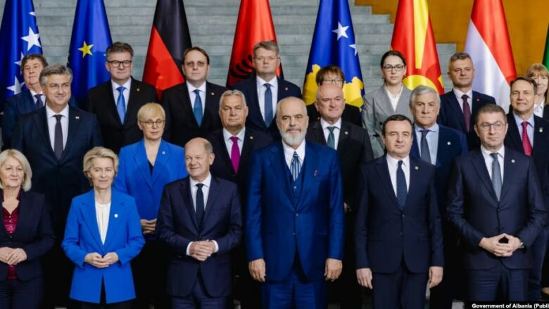

Haxhiu: 16 ushtarë janë dërguar në Komision Disiplinor vetëm pse janë ushqyer jashtë kazermës
Quni: Shqetësim thelbësor gjendja e ushtarëve, të gjendet zgjidhje duke përdorur ekspertizën e NATO-s

Liderët e Ballkanit Perëndimor nënshkruajnë marrëveshje të reja në Berlin
Ky portal mirëmbahet nga kompania "Telegrafi".Materialet dhe informacionet në këtë portal nuk mund të kopjohen,shtypen,ose të përdoren në çfarëdo forme tjetër për qëllime përfitimi,pa miratimin e drejtuesve të "Telegrafit".Për ta shfrytëzuar materialin e këtij portali obligoheni t'i pranoni kushtet e përdorimit.
Të gjitha të drejtat janë të rezervuara 2006-2022 Portali Telegrafi